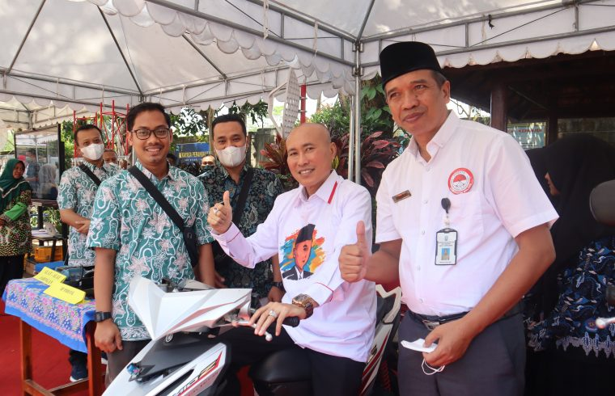

DIKUNJUNGI OLEH KADISDIK JATIM WAHID WAHYUDI DAN RATUSAN TAMU PERGATSI SMKN 1 KEPANJEN MENGGELAR PAMERAN PRODUK UNGGULAN

Kamis (01/09/22) SMKN 1 Kepanjen menjadi tuan rumah untuk pengukuhan dan pelantikan pengurus PERGATSI (Persatuan Gateball Seluruh Indonesia) Jawa Timur dan talkshow Jatim Cerdas. Momentum ini merupakan kesempatan emas untuk Kanesa menunjukkan produk-produk unggulan dari masing masing program keahlian. Kepala Dinas Pendidikan Jawa Timur, Wahid Wahyudi didampingi oleh Kepala Sekolah SMKN 1 Kepanjen, Bapak Lasmono dan Kepala Cabang Dinas Pendidikan, Bu Anny berkeliling dari stand ke stand yang telah digelar. Selain produk hasil karya Siswa Siswi Kanesa pada masing-masing program keahlian juga terdapat foodtruck Waku Wika, yang juga digunakan sebagai media pembelajaran kewirausahaan SMKN 1 Kepanjen.